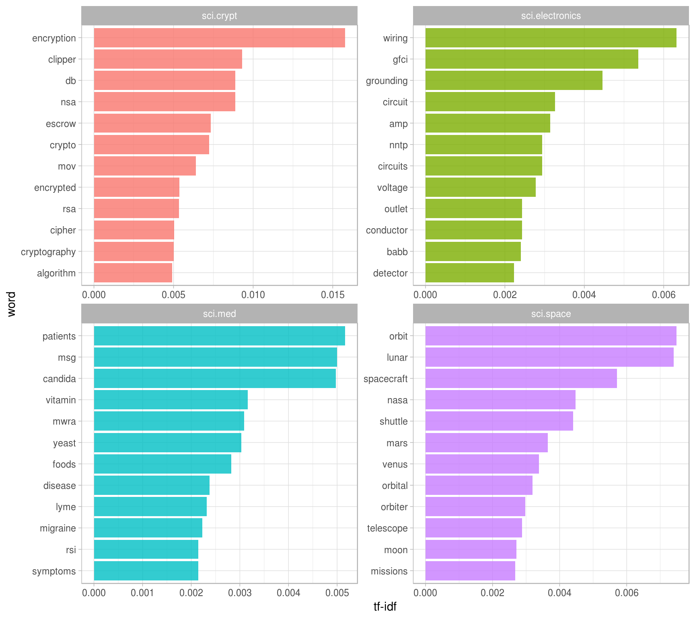
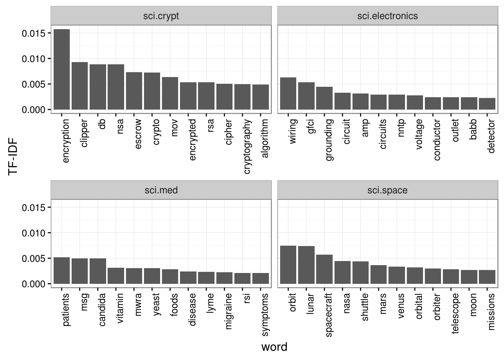
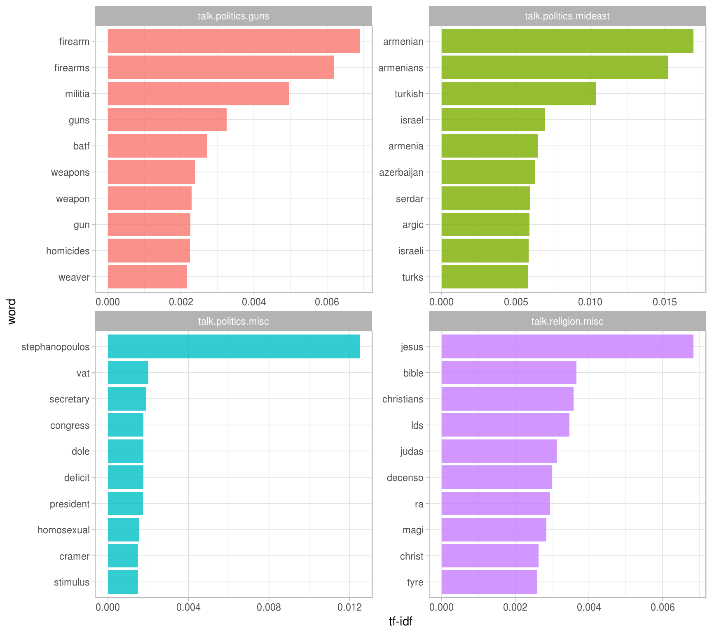
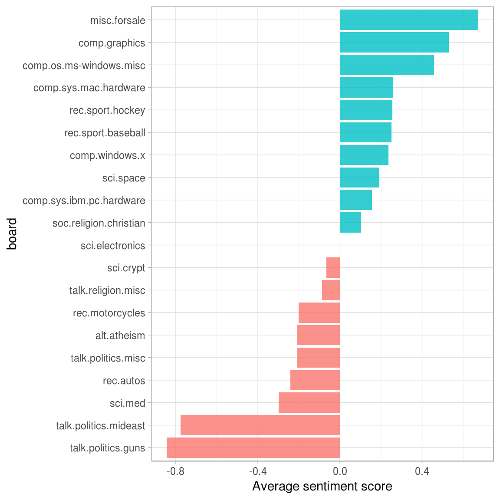
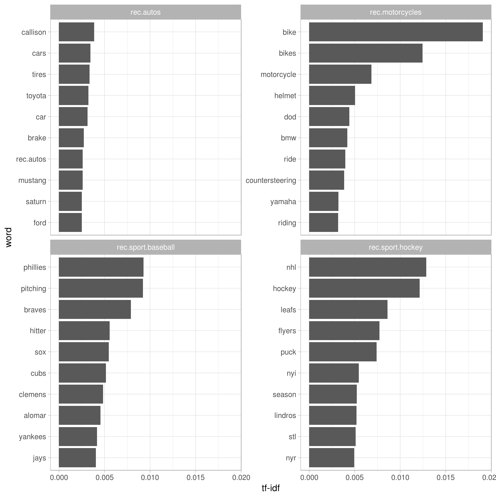
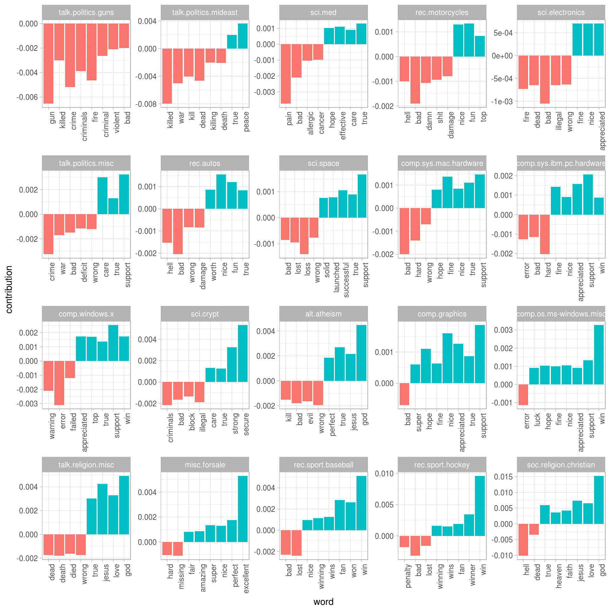
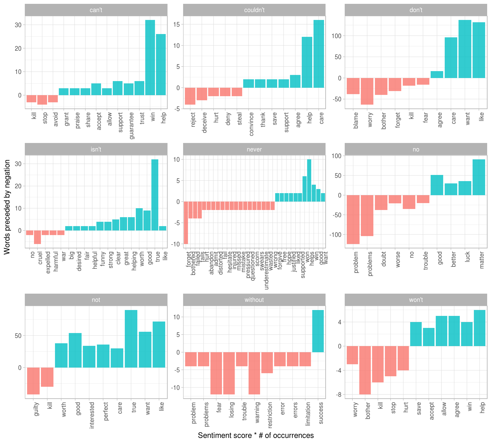

10 Case study: analyzing usenet text
In our final chapter, we’ll use what we’ve learned in this book to perform a start-to-finish analysis of a set of 20,000 messages sent to 20 Usenet bulletin boards in 1993. The Usenet bulletin boards in this data set include boards for topics like politics, autos, “for sale”, atheism, etc. This data set is publicly available and has become popular for testing and exercises in text analysis and machine learning.
10.1 Wrangling the data
We’ll start by reading in all the messages. (Note that this step takes several minutes).
library(dplyr)
library(tidyr)
library(purrr)
library(readr)
library(stringr)training_folder <- "data/20news-bydate/20news-bydate-train/"
read_folder <- function(infolder) {
print(infolder)
data_frame(file = dir(infolder, full.names = TRUE)) %>%
mutate(text = map(file, read_lines)) %>%
transmute(id = basename(file), text) %>%
unnest(text)
}
raw_text <- data_frame(folder = dir(training_folder, full.names = TRUE)) %>%
unnest(map(folder, read_folder)) %>%
transmute(board = basename(folder), id, text)Each email has structure we need to remove. For starters:
- Every email has one or more headers (e.g. “from:”, “in_reply_to:”)
- Many have signatures, which (since they’re constant for each user) we wouldn’t want to examine alongside the content
We need to remove headers and signatures.
# remove headers and signatures
cleaned_text <- raw_text %>%
group_by(id) %>%
filter(cumsum(text == "") > 0,
cumsum(str_detect(text, "^--")) == 0) %>%
ungroup()
# remove nested text (starting with ">") and lines that note the author
# of those
cleaned_text <- cleaned_text %>%
filter(str_detect(text, "^[^>]+[A-Za-z\\d]") | text == "",
!str_detect(text, "writes(:|\\.\\.\\.)$"),
!str_detect(text, "^In article <"),
!id %in% c(9704, 9985))Now it is time to use unnest_tokens to identify the words in this data set.
library(tidytext)
usenet_words <- cleaned_text %>%
unnest_tokens(word, text) %>%
filter(str_detect(word, "^[a-z]"),
str_detect(word, "[a-z]$"),
!word %in% stop_words$word)What are the most common words?
usenet_words %>%
count(word, sort = TRUE)## # A tibble: 63,937 × 2
## word n
## <chr> <int>
## 1 people 3397
## 2 time 2569
## 3 god 1611
## 4 system 1571
## 5 subject 1312
## 6 lines 1188
## 7 program 1086
## 8 windows 1085
## 9 bit 1070
## 10 space 1062
## # ... with 63,927 more rowsOr perhaps more sensibly, we could examine the most common words by board.
words_by_board <- usenet_words %>%
count(board, word) %>%
ungroup()words_by_board %>%
group_by(board) %>%
top_n(3)## Source: local data frame [60 x 3]
## Groups: board [20]
##
## board word n
## <chr> <chr> <int>
## 1 alt.atheism god 268
## 2 alt.atheism jesus 129
## 3 alt.atheism people 276
## 4 comp.graphics graphics 217
## 5 comp.graphics image 169
## 6 comp.graphics program 134
## 7 comp.os.ms-windows.misc dos 194
## 8 comp.os.ms-windows.misc file 232
## 9 comp.os.ms-windows.misc windows 625
## 10 comp.sys.ibm.pc.hardware card 237
## # ... with 50 more rowsThese look sensible and illuminating so far; let’s move on to some more sophisticated analysis!
10.2 Term frequency and inverse document frequency: tf-idf
Some words are likely to be more common on particular boards. Let’s try quantifying this using the tf-idf metric we learned in Chapter 4.
tf_idf <- words_by_board %>%
bind_tf_idf(word, board, n) %>%
arrange(desc(tf_idf))
tf_idf## # A tibble: 166,528 × 6
## board word n tf idf tf_idf
## <chr> <chr> <int> <dbl> <dbl> <dbl>
## 1 comp.sys.ibm.pc.hardware scsi 483 0.018138801 1.203973 0.02183862
## 2 rec.motorcycles bike 321 0.013750268 1.386294 0.01906192
## 3 talk.politics.mideast armenian 440 0.007348275 2.302585 0.01692003
## 4 sci.crypt encryption 410 0.008311878 1.897120 0.01576863
## 5 talk.politics.mideast armenians 396 0.006613447 2.302585 0.01522803
## 6 rec.sport.hockey nhl 151 0.004291114 2.995732 0.01285503
## 7 comp.sys.ibm.pc.hardware ide 208 0.007811326 1.609438 0.01257184
## 8 talk.politics.misc stephanopoulos 158 0.004175145 2.995732 0.01250762
## 9 rec.motorcycles bikes 97 0.004155065 2.995732 0.01244746
## 10 rec.sport.hockey hockey 265 0.007530762 1.609438 0.01212029
## # ... with 166,518 more rowsWe can visualize this for a few select boards. First, let’s look at all the sci. boards.
library(ggplot2)
tf_idf %>%
filter(str_detect(board, "^sci\\.")) %>%
group_by(board) %>%
top_n(12, tf_idf) %>%
mutate(word = reorder(word, tf_idf)) %>%
ggplot(aes(word, tf_idf, fill = board)) +
geom_bar(alpha = 0.8, stat = "identity", show.legend = FALSE) +
facet_wrap(~ board, scales = "free") +
ylab("tf-idf") +
coord_flip()
We could use almost the same code (not shown) to compare the “rec.” (recreation) or “talk.” boards:

We see lots of characteristic words for these boards, from “pitching” and “hitter” for the baseball board to “firearm” and “militia” on the guns board. Notice how high tf-idf is for words like “Stephanopoulos” or “Armenian”; this means that these words are very unique among the documents as a whole and important to those particular boards.
10.3 Sentiment analysis
We can use the sentiment analysis techniques we explored in Chapter 3 to examine how positive and negative words were used in these Usenet posts. Which boards used the most positive and negative words?
AFINN <- get_sentiments("afinn")
word_board_sentiments <- words_by_board %>%
inner_join(AFINN, by = "word")
board_sentiments <- word_board_sentiments %>%
group_by(board) %>%
summarize(score = sum(score * n) / sum(n))
board_sentiments %>%
mutate(board = reorder(board, score)) %>%
ggplot(aes(board, score, fill = score > 0)) +
geom_bar(alpha = 0.8, stat = "identity", show.legend = FALSE) +
coord_flip() +
ylab("Average sentiment score")
10.4 Sentiment analysis by word
It’s worth looking deeper to understand why some boards ended up more positive than others. For that, we can examine the total positive and negative contributions of each word.
contributions <- usenet_words %>%
inner_join(AFINN, by = "word") %>%
group_by(word) %>%
summarize(occurences = n(),
contribution = sum(score))
contributions## # A tibble: 1,891 × 3
## word occurences contribution
## <chr> <int> <int>
## 1 abandon 12 -24
## 2 abandoned 18 -36
## 3 abandons 3 -6
## 4 abduction 1 -2
## 5 abhor 3 -9
## 6 abhorred 1 -3
## 7 abhorrent 2 -6
## 8 abilities 16 32
## 9 ability 160 320
## 10 aboard 8 8
## # ... with 1,881 more rowsWhich words had the most effect?
contributions %>%
top_n(25, abs(contribution)) %>%
mutate(word = reorder(word, contribution)) %>%
ggplot(aes(word, contribution, fill = contribution > 0)) +
geom_bar(alpha = 0.8, stat = "identity", show.legend = FALSE) +
coord_flip()
These words look generally reasonable as indicators of each message’s sentiment, but we can spot possible problems with the approach. “True” could just as easily be a part of “not true” or a similar negative expression, and the words “God” and “Jesus” are apparently very common on Usenet but could easily be used in many contexts, positive or negative.
The important point is that we may also care about which words contributed the most within each board. We can calculate each word’s contribution to each board’s sentiment score from our word_board_sentiments variable:
top_sentiment_words <- word_board_sentiments %>%
mutate(contribution = score * n / sum(n))
top_sentiment_words %>%
group_by(board) %>%
top_n(8, abs(contribution)) %>%
ungroup() %>%
mutate(board = reorder(board, contribution),
word = reorder(word, contribution)) %>%
ggplot(aes(word, contribution, fill = contribution > 0)) +
geom_bar(alpha = 0.8, stat = "identity", show.legend = FALSE) +
facet_wrap(~ board, scales = "free") +
theme(axis.text.x = element_text(angle = 90, hjust = 1))
We can see here how much sentiment is confounded with topic in this particular approach. An atheism board is likely to discuss “god” in detail even in a negative context, and we can see it makes the board look more positive. Similarly, the negative contribution of the word “gun” to the “talk.politics.guns” board would occur even if the board members were discussing guns positively.
10.5 Sentiment analysis by message
We can also try finding the most positive and negative messages.
sentiment_messages <- usenet_words %>%
inner_join(AFINN, by = "word") %>%
group_by(board, id) %>%
summarize(sentiment = mean(score),
words = n()) %>%
ungroup() %>%
filter(words >= 5)As a simple measure to reduce the role of randomness, we filtered out messages that had fewer than five words that contributed to sentiment.
What were the most positive messages?
sentiment_messages %>%
arrange(desc(sentiment))## # A tibble: 3,385 × 4
## board id sentiment words
## <chr> <chr> <dbl> <int>
## 1 rec.sport.hockey 53560 3.888889 18
## 2 rec.sport.hockey 53602 3.833333 30
## 3 rec.sport.hockey 53822 3.833333 6
## 4 rec.sport.hockey 53645 3.230769 13
## 5 rec.autos 102768 3.200000 5
## 6 misc.forsale 75965 3.000000 5
## 7 misc.forsale 76037 3.000000 5
## 8 rec.sport.baseball 104458 2.916667 12
## 9 comp.os.ms-windows.misc 9620 2.857143 7
## 10 misc.forsale 74787 2.833333 6
## # ... with 3,375 more rowsLet’s check this by looking at the most positive message in the whole data set.
print_message <- function(message_id) {
cleaned_text %>%
filter(id == message_id) %>%
filter(text != "") %>%
.$text %>%
cat(sep = "\n")
}
print_message(53560)## Everybody. Please send me your predictions for the Stanley Cup Playoffs!
## I want to see who people think will win.!!!!!!!
## Please Send them in this format, or something comparable:
## 1. Winner of Buffalo-Boston
## 2. Winner of Montreal-Quebec
## 3. Winner of Pittsburgh-New York
## 4. Winner of New Jersey-Washington
## 5. Winner of Chicago-(Minnesota/St.Louis)
## 6. Winner of Toronto-Detroit
## 7. Winner of Vancouver-Winnipeg
## 8. Winner of Calgary-Los Angeles
## 9. Winner of Adams Division (1-2 above)
## 10. Winner of Patrick Division (3-4 above)
## 11. Winner of Norris Division (5-6 above)
## 12. Winner of Smythe Division (7-8 above)
## 13. Winner of Wales Conference (9-10 above)
## 14. Winner of Campbell Conference (11-12 above)
## 15. Winner of Stanley Cup (13-14 above)
## I will summarize the predictions, and see who is the biggest
## INTERNET GURU PREDICTING GUY/GAL.
## Send entries to Richard Madison
## rrmadiso@napier.uwaterloo.ca
## PS: I will send my entries to one of you folks so you know when I say
## I won, that I won!!!!!
## From: sknapp@iastate.edu (Steven M. Knapp)
## Subject: Re: Radar detector DETECTORS?
## Organization: Iowa State University, Ames, IA
## Lines: 16
## Yes some radar detectors are less detectable by radar detector
## detectors. ;-)
## Look in Car and Driver (last 6 months should do), they had a big
## review of the "better" detectors, and stealth was a factor.
## Steven M. Knapp Computer Engineering Student
## sknapp@iastate.edu President Cyclone Amateur Radio Club
## Iowa State University; Ames, IA; USA Durham Center Operations StaffLooks like it’s because the message uses the word “winner” a lot! How about the most negative message? Turns out it’s also from the hockey site, but has a very different attitude.
sentiment_messages %>%
arrange(sentiment)## # A tibble: 3,385 × 4
## board id sentiment words
## <chr> <chr> <dbl> <int>
## 1 rec.sport.hockey 53907 -3.000000 6
## 2 sci.electronics 53899 -3.000000 5
## 3 rec.autos 101627 -2.833333 6
## 4 comp.graphics 37948 -2.800000 5
## 5 comp.windows.x 67204 -2.700000 10
## 6 talk.politics.guns 53362 -2.666667 6
## 7 alt.atheism 51309 -2.600000 5
## 8 comp.sys.mac.hardware 51513 -2.600000 5
## 9 rec.autos 102883 -2.600000 5
## 10 rec.motorcycles 72052 -2.600000 5
## # ... with 3,375 more rowsprint_message(53907)## Losers like us? You are the fucking moron who has never heard of the Western
## Business School, or the University of Western Ontario for that matter. Why
## don't you pull your head out of your asshole and smell something other than
## shit for once so you can look on a map to see where UWO is! Back to hockey,
## the North Stars should be moved because for the past few years they have
## just been SHIT. A real team like Toronto would never be moved!!!
## Andrew--Well then.
10.6 N-grams
We can also examine the effect of words that are used in negation, like we did in Chapter 5. Let’s start by finding all the bigrams in the Usenet posts.
usenet_bigrams <- cleaned_text %>%
unnest_tokens(bigram, text, token = "ngrams", n = 2)
usenet_bigrams## # A tibble: 1,762,089 × 3
## board id bigram
## <chr> <chr> <chr>
## 1 alt.atheism 49960 archive name
## 2 alt.atheism 49960 name atheism
## 3 alt.atheism 49960 atheism resources
## 4 alt.atheism 49960 resources alt
## 5 alt.atheism 49960 alt atheism
## 6 alt.atheism 49960 atheism archive
## 7 alt.atheism 49960 archive name
## 8 alt.atheism 49960 name resources
## 9 alt.atheism 49960 resources last
## 10 alt.atheism 49960 last modified
## # ... with 1,762,079 more rowsNow let’s count how many of these bigrams are used in each board.
usenet_bigram_counts <- usenet_bigrams %>%
count(board, bigram)
usenet_bigram_counts %>%
arrange(desc(n))## Source: local data frame [1,006,415 x 3]
## Groups: board [20]
##
## board bigram n
## <chr> <chr> <int>
## 1 soc.religion.christian of the 1141
## 2 talk.politics.mideast of the 1135
## 3 talk.politics.mideast in the 857
## 4 sci.space of the 684
## 5 sci.crypt of the 671
## 6 talk.politics.misc of the 645
## 7 soc.religion.christian in the 637
## 8 talk.religion.misc of the 630
## 9 talk.politics.guns of the 618
## 10 alt.atheism of the 474
## # ... with 1,006,405 more rowsNext, we can calculate tf-idf for the bigrams to find the ones that are important for each board.
bigram_tf_idf <- usenet_bigram_counts %>%
bind_tf_idf(bigram, board, n)
bigram_tf_idf %>%
arrange(desc(tf_idf))## Source: local data frame [1,006,415 x 6]
## Groups: board [20]
##
## board bigram n tf idf tf_idf
## <chr> <chr> <int> <dbl> <dbl> <dbl>
## 1 talk.politics.misc mr stephanopoulos 155 0.001477344 2.995732 0.004425728
## 2 comp.windows.x n x 177 0.001917577 2.302585 0.004415384
## 3 comp.windows.x x printf 130 0.001408390 2.995732 0.004219158
## 4 rec.motorcycles the bike 104 0.001675663 2.302585 0.003858356
## 5 comp.sys.ibm.pc.hardware scsi 2 107 0.001478983 2.302585 0.003405485
## 6 comp.windows.x file x 104 0.001126712 2.995732 0.003375327
## 7 talk.politics.mideast the armenians 169 0.001111988 2.995732 0.003331220
## 8 rec.sport.hockey 1 0 256 0.002733816 1.203973 0.003291440
## 9 comp.windows.x output oname 100 0.001083377 2.995732 0.003245506
## 10 comp.windows.x x char 98 0.001061709 2.995732 0.003180596
## # ... with 1,006,405 more rowsNow we come back to the words used in negation that we are interested in examining. Let’s define a vector of words that we suspect are used in negation, and use the same joining and counting approach from Chapter 5 to examine all of them at once.
negate_words <- c("not", "without", "no", "can't", "don't", "won't")
usenet_bigram_counts %>%
ungroup() %>%
separate(bigram, c("word1", "word2"), sep = " ") %>%
filter(word1 %in% negate_words) %>%
count(word1, word2, wt = n, sort = TRUE) %>%
inner_join(AFINN, by = c(word2 = "word")) %>%
mutate(contribution = score * nn) %>%
top_n(10, abs(contribution)) %>%
ungroup() %>%
mutate(word2 = reorder(word2, contribution)) %>%
ggplot(aes(word2, contribution, fill = contribution > 0)) +
geom_bar(alpha = 0.8, stat = "identity", show.legend = FALSE) +
facet_wrap(~ word1, scales = "free", nrow = 3) +
xlab("Words preceded by negation") +
ylab("Sentiment score * # of occurrences") +
theme(axis.text.x = element_text(angle = 90, hjust = 1))
These words are the ones that contribute the most to the sentiment scores in the wrong direction, because they are being used with negation words before them. Phrases like “no problem” and “don’t want” are important sources of misidentification.